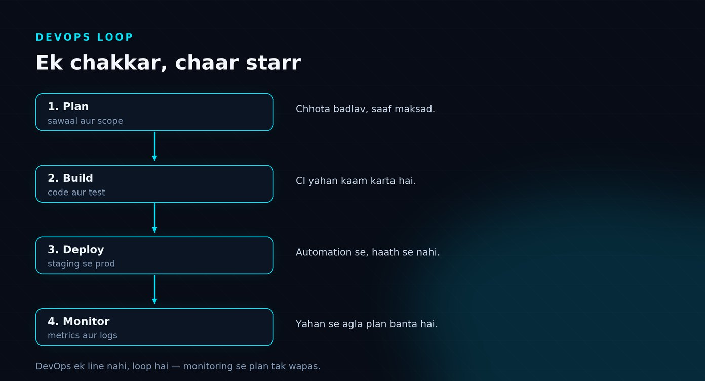
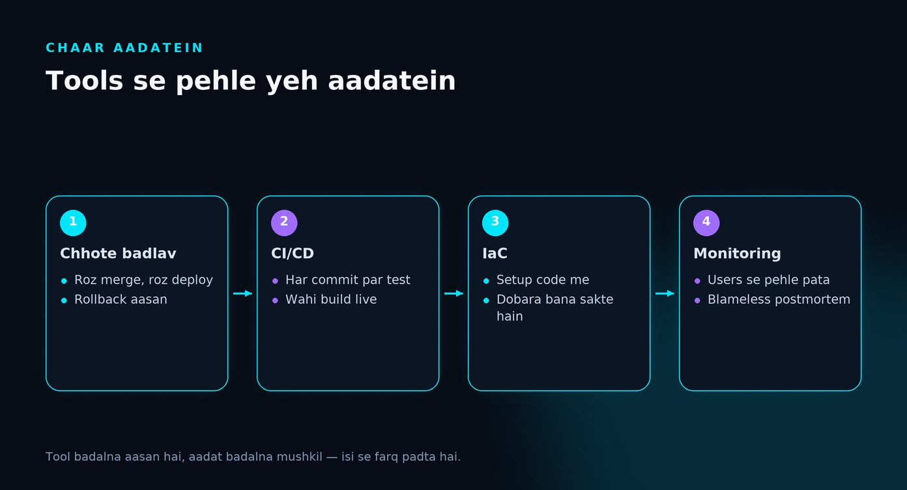

DevOps Kya Hai? Culture, Tools aur 6 Practices
"DevOps engineer चाहिए" — यह line आज हर job board पर है, और उसके नीचे जो requirements लिखी होती हैं, वे अक्सर आपस में मेल नहीं खातीं: Linux, Kubernetes, Terraform, Python, CI/CD, monitoring, और साथ में "अच्छी communication skills". इसे देखकर लगता है कि DevOps कोई tool है जो सीख लिया जाए। असल में यह एक तरीका है — software बनाने और चलाने वालों के बीच की दीवार गिराने का।
इस guide में मैं DevOps को उसकी शुरुआत से खोलूँगा — यह शब्द कहाँ से आया, culture का असली मतलब, वे छह practices जो इसे ज़मीन पर उतारती हैं, tools का सही रोल, और DevOps engineer बनने का realistic रास्ता। साथ में वे गलतियाँ भी जो "DevOps" के नाम पर सिर्फ़ एक और सिलो बना देती हैं।
छोटा जवाब: DevOps एक culture और practice है जिसमें development और operations टीमें मिलकर काम करती हैं, ताकि software तेज़ी से और भरोसे के साथ production तक पहुँचे। इसके छह मुख्य हिस्से हैं — छोटे बदलाव, CI/CD, infrastructure as code, monitoring, incident response और blameless postmortem. Tools इन्हें आसान बनाते हैं, पर tools ही DevOps नहीं हैं।
DevOps shabd kahan se aaya
2000 के दशक में software बनाने वाली team और उसे चलाने वाली team अलग-अलग थीं, और उनके हित उल्टे थे। Developers को जल्दी feature चाहिए था; operations को स्थिरता। नतीजा — developers code फेंकते थे, operations उसे चलाने में जूझती थी, और हर release एक लड़ाई बन जाती थी।
DevOps उसी दीवार को गिराने की कोशिश है। इसका मतलब यह नहीं कि operations की job खत्म हो गई — इसका मतलब है कि जो code लिखता है, वह उसे चलने की ज़िम्मेदारी भी समझे, और जो उसे चलाता है, वह बनाने की प्रक्रिया में शुरू से शामिल रहे।
एक practical पहचान: अगर आपकी टीम में कोई कहता है "यह मेरा code नहीं, server की समस्या है", तो वहाँ DevOps नहीं है। DevOps में सवाल "किसकी गलती है" नहीं, "क्या सुधारें" होता है।

Culture: jo tools se pehle aata hai
DevOps की शुरुआत culture से होती है, और culture की शुरुआत भरोसे से। तीन आदतें इसे साफ़ दिखाती हैं। पहली — shared responsibility: feature का मालिक वही है जो उसे production में चलते देखता है। दूसरी — blameless काम: गलती होने पर system सुधारा जाता है, व्यक्ति नहीं। तीसरी — feedback loop: monitoring का data सिर्फ़ alert के लिए नहीं, अगले काम की योजना के लिए भी इस्तेमाल होता है।
Blameless होना कमज़ोरी नहीं है। जिस team में लोग डरकर गलती छिपाते हैं, वहाँ छोटी गलती बड़ी आपदा बन जाती है। जहाँ लोग खुलकर बताते हैं, वहाँ समस्या जल्दी पकड़ी जाती है — और यही असली स्थिरता है।
Chhah practices
1. छोटे और लगातार बदलाव। बड़े release में जोखिम ज़्यादा होता है। हफ़्ते में एक बार के बजाय दिन में कई बार छोटा deploy करें — हर बदलाव को समझना और rollback करना आसान होता है।
2. CI/CD। हर commit पर build और tests, और तैयार build का अपने आप deploy. इससे "यह मेरे machine पर चलता है" वाली समस्या खत्म होती है।
3. Infrastructure as code। Server, network और database को console में click करके नहीं, code में लिखें। इससे environment दोबारा बनाया जा सकता है और बदलाव का record रहता है।
4. Monitoring और alerting। Users को पता चलने से पहले आपको पता चले। Metrics, logs और traces तीनों ज़रूरी हैं, और alerts कम पर सही होने चाहिए।
5. Incident response। जब कुछ टूटे, तो एक साफ़ process हो — कौन lead करेगा, status कहाँ अपडेट होगा, और communication कैसे होगी। बिना process के हर incident पहली बार जैसा लगता है।
6. Postmortem। Incident के बाद एक छोटा document — क्या हुआ, कितनी देर, क्या ठीक किया, और आगे क्या बदलेगा। इसमें नाम नहीं, system की बात होती है।

Tools ka sahi role
DevOps tools बहुत हैं, और यही सबसे बड़ी उलझन है। पर उन्हें चार श्रेणियों में रखें तो तस्वीर साफ़ हो जाती है। Version control और CI — Git, GitHub Actions, GitLab CI. Containers और orchestration — Docker, Kubernetes. Infrastructure — Terraform, Ansible. Observability — Prometheus, Grafana, Loki, OpenTelemetry.
ज़रूरी बात यह है कि tool चुनने से पहले समस्या समझें। अगर आपकी टीम महीने में एक बार deploy करती है, तो Kubernetes लाने से पहले CI/CD ठीक करें। अगर alerts रोज़ झूठ बोलते हैं, तो नया dashboard नहीं, alert rules साफ़ करने चाहिए।
| ज़रूरत | शुरुआत का tool | कब बदलें |
|---|---|---|
| CI/CD | GitHub Actions | जब self-hosted runners या complex pipelines चाहिए |
| Containers | Docker | जब कई services और scaling चाहिए |
| Orchestration | Managed platform (ECS, Cloud Run) | जब multi-cloud या खास networking चाहिए |
| IaC | Terraform | जब team बड़ी हो और modules चाहिए |
| Monitoring | Managed service | जब cost या data ownership की समस्या हो |
एक और बात tools चुनते समय — जो tool आपकी team पहले से जानती है, वह अक्सर नए और बेहतर tool से ज़्यादा काम करता है। नया tool सीखने में लगा समय उसी चीज़ से निकलता है जो असल में सुधार ला सकती थी। इसीलिए पहले process ठीक करें, फिर tool देखें।
SRE, platform engineering aur DevOps
इन तीनों शब्दों को अक्सर एक साथ सुना जाता है, पर तीनों अलग ज़ोर देते हैं। DevOps एक culture है — दोनों टीमों को जोड़ने का तरीका। SRE (Site Reliability Engineering) उस culture को engineering के नियमों से लागू करता है — SLO, error budget और toil कम करने पर ज़ोर। Platform engineering developers के लिए एक आंतरिक platform बनाता है — जहाँ deploy, database और monitoring self-service हों।
फर्क एक उदाहरण से समझें। DevOps कहेगा "दोनों टीमें मिलकर काम करें"। SRE कहेगा "हमारा SLO 99.9% है, इस महीने budget खत्म हो गया है, इसलिए नए feature रोकें"। Platform engineering कहेगा "developer को deploy के लिए किसी को email नहीं करना पड़े — एक command काफ़ी हो।"
छोटी team के लिए यह बहस ज़्यादा मायने नहीं रखती। जब तक pipeline, monitoring और backup ठीक न हों, नाम बदलने से कुछ नहीं होता।
Ek team me DevOps kaise shuru karein
पहले 30 दिन। पहले नापें — deploy में कितना समय लगता है, कितनी बार fail होता है, incidents कितने आते हैं और कितनी देर में पता चलता है। बिना नापे सुधार का दावा नहीं किया जा सकता। इसी महीने एक छोटी CI pipeline चालू करें।
अगले 30 दिन। Deploy को दोहराने लायक बनाएँ — एक command, एक जैसा नतीजा। Staging बनाएँ अगर नहीं है। और monitoring में कम से कम error rate, latency और uptime जोड़ें।
आख़िरी 30 दिन। Infrastructure के कम से कम एक हिस्से को code में लाएँ — जैसे network या एक service. एक incident postmortem लिखें, चाहे छोटा ही हो। और on-call का एक साफ़ rotation बनाएँ।
इस 90 दिन में कोई नया tool खरीदने की ज़रूरत नहीं पड़ती। जो पहले से है, उसे ठीक से इस्तेमाल करना ही सबसे बड़ा सुधार होता है।
On-call ko insaani rakhein
On-call का मतलब है कि किसी हफ़्ते एक व्यक्ति alerts का जवाब दे। यह ज़रूरी है, पर इसे सज़ा न बनाएँ। तीन नियम मदद करते हैं — जो alert action नहीं माँगता, उसे हटा दें; रात में सिर्फ़ उन चीज़ों के लिए जगाएँ जो users को प्रभावित करती हैं; और अगले दिन उस व्यक्ति को हल्का काम दें।
जो team on-call को ठीक से चलाती है, वहाँ incidents कम नहीं होते — पर उनका असर कम होता है, क्योंकि जवाब तेज़ और साफ़ होता है।
Chaar numbers jo asli sudhar batate hain
DORA ने वर्षों की research के बाद चार numbers तय किए जो software delivery की सेहत बताते हैं। इन्हें अपनी team पर लगाकर देखें — सुधार का दावा इन्हीं से साबित होता है।
1. Deployment frequency। आप कितनी बार production में deploy करते हैं — महीने में एक बार या दिन में कई बार।
2. Lead time for changes। Commit से production तक कितना समय लगता है।
3. Change failure rate। कितने प्रतिशत deploys के बाद कुछ टूटा और ठीक करना पड़ा।
4. Time to restore। जब कुछ टूटे, तो ठीक होने में कितना समय लगा।
इन चारों में सबसे ज़्यादा ध्यान तीसरे और चौथे पर दें। पहले दो बढ़ाना आसान है, पर अगर failure rate और restore time खराब हैं, तो तेज़ deploy सिर्फ़ तेज़ आपदा है।
DevOps engineer banta kaise hai
यह सबसे ज़्यादा पूछा जाने वाला सवाल है। सच यह है कि DevOps सीधे सीखा नहीं जाता — यह किसी और चीज़ के ऊपर आता है। ज़्यादातर अच्छे DevOps लोग developer, system administrator या tester रहे हैं, और फिर उन्होंने automation सीखी।
अगर आप शुरुआत कर रहे हैं, तो एक रास्ता यह है: पहले Linux की बुनियाद (files, permissions, processes, network), फिर एक language (Python या Bash), फिर Git, फिर Docker, फिर एक cloud provider, फिर CI/CD, और अंत में Terraform और monitoring. हर step पर कुछ बनाएँ — सिर्फ़ tutorial देखकर नहीं।
एक और बात — interview में tools की सूची से ज़्यादा यह देखा जाता है कि आप किसी समस्या को कैसे तोड़ते हैं। "Production में 502 आ रहा है, आप क्या करेंगे?" जैसे सवाल का जवाब tools से नहीं, सोच के क्रम से आता है।
Aath galtiyan jo DevOps ko nakli bana deti hain
1. Tool खरीदना और culture न बदलना। Kubernetes लाने से सिलो नहीं टूटते।
2. एक "DevOps टीम" बनाना जो बाकी सबके लिए deploy करे। यह वही पुरानी दीवार है, नए नाम के साथ।
3. सब कुछ automate करने की कोशिश। जो काम महीने में एक बार होता है, उसे automate करने में समय बर्बाद मत करें।
4. Alerts की बाढ़। जब हर चीज़ alert करती है, तो कोई नहीं देखता।
5. Postmortem में दोषी ढूँढना। इससे अगली बार जानकारी छिपेगी।
6. Documentation न रखना। जो चीज़ code में है पर समझी नहीं गई, वह अगली छुट्टी पर टूटेगी।
7. बिना backup के बदलाव। Automation गलती को भी तेज़ करती है।
8. "DevOps" को सिर्फ़ deployment समझना। Deployment उसका एक हिस्सा है; बाकी reliability और feedback है।
Mera anubhav
मैंने DevOps की शुरुआत एक गलत जगह से की — tools से। तीन महीने Kubernetes सीखा, फिर एक छोटी सी app को उस पर चलाया जिसे एक साधारण VPS पर आसानी से चलाया जा सकता था। सीखने के लिए ठीक था, पर असली समस्या उससे नहीं हल हुई।
असली समस्या थी कि हमें पता ही नहीं था कि production में क्या हो रहा है। कोई log नहीं, कोई metric नहीं, कोई alert नहीं। जब एक बार database की disk भर गई, तो पता दो दिन बाद चला — जब users ने शिकायत की। उसके बाद मैंने पहले monitoring लगाया, फिर backup, फिर CI/CD. Kubernetes बहुत बाद में आया।
तीसरी सीख — सबसे बड़ा फायदा process से आया, technology से नहीं। जिस दिन हमने तय किया कि हर incident के बाद एक छोटा postmortem लिखेंगे, उसके छह महीने में दोहराई गई गलतियाँ लगभग खत्म हो गईं। किसी नए tool ने वह नहीं किया।
नतीजा
DevOps एक culture है जिसमें बनाने और चलाने वाले एक साथ ज़िम्मेदारी लेते हैं, और उसे छह practices ज़मीन पर उतारती हैं — छोटे बदलाव, CI/CD, infrastructure as code, monitoring, incident response और postmortem. Tools इन्हें आसान बनाते हैं, पर वे खुद DevOps नहीं हैं। शुरुआत Linux, Git, Docker, एक cloud और CI/CD से करें, और हर step पर कुछ बनाएँ।
आगे पढ़ें: CI/CD pipeline — जहाँ GitHub Actions का practical example है, और monitoring और logging — जहाँ production में क्या नापना है, यह समझाया है।
अक्सर पूछे जाने वाले सवाल
DevOps और SRE एक ही हैं?
करीब हैं। SRE reliability को engineering की तरह देखता है — SLO, error budget और automation के साथ।
क्या DevOps के लिए coding ज़रूरी है?
हाँ। Scripting (Python या Bash) और infrastructure code पढ़ना-लिखना आना चाहिए।
क्या DevOps कोई certification चाहिए?
ज़रूरी नहीं, पर cloud या Kubernetes का certification कुछ जगह शॉर्टलिस्ट में मदद करता है।
छोटी team DevOps कैसे शुरू करे?
CI/CD से — सबसे पहले हर commit पर build और test, फिर staging, फिर monitoring.
क्या DevOps से salary बेहतर होती है?
आम तौर पर हाँ, क्योंकि इसमें development और infrastructure दोनों की समझ माँगी जाती है।